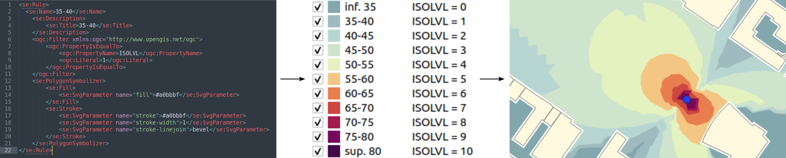
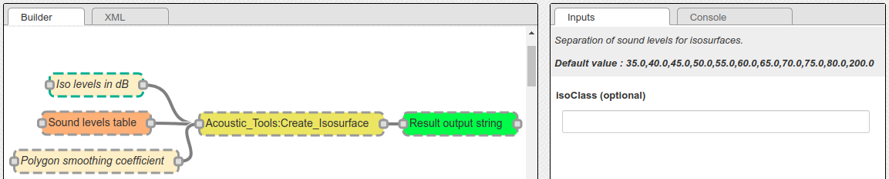
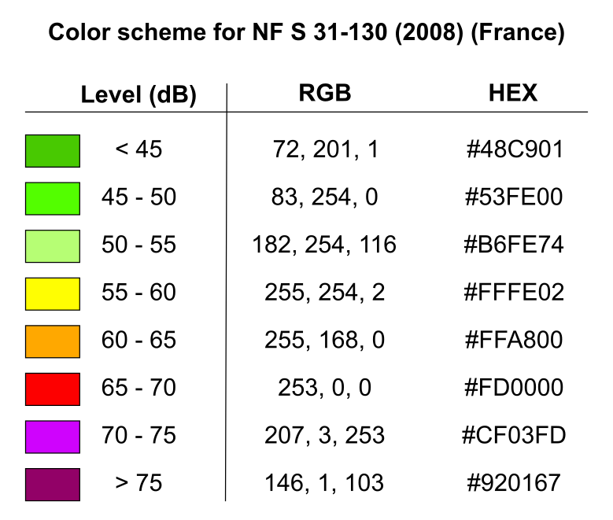
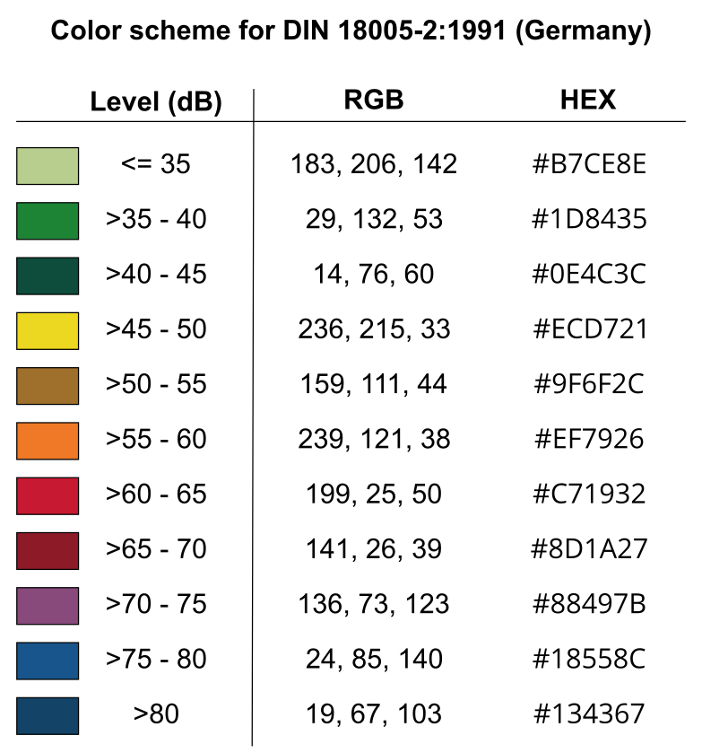
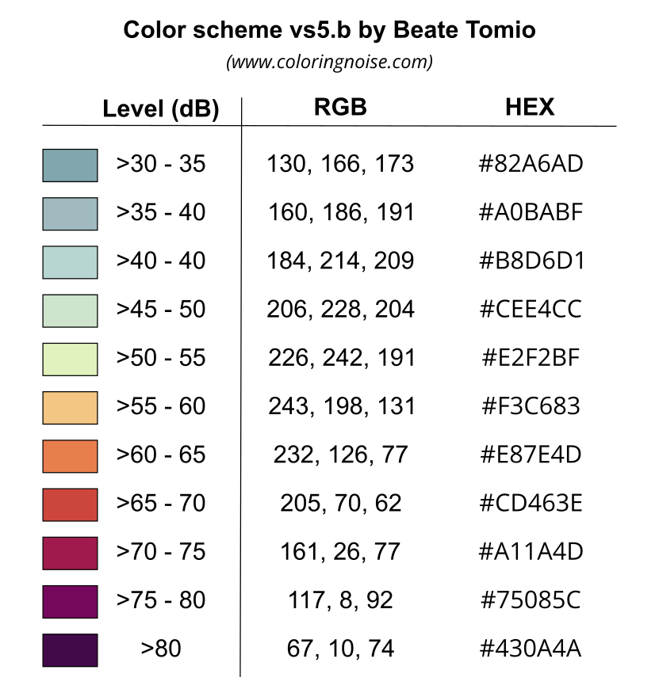

Noise Map Color Scheme
Below are presented some color schemes used to colorize noise isophones, produced in the CONTOURING_NOISE_MAP layer.
{kind=link}

Note
If you want to feed this list with other schemes, please contact us (see Support page).
Introduction
Creation of the Isosurfaces
NoiseModelling can produce isophones (also called isosurfaces) thanks to the Acoustic_Tools:Create_Isosurface script. In this script, an optionnal parameter called Iso levels in dB allows the user to specify the thresholds used to generate the surfaces.
{kind=link}

By default, the thresholds are 35, 40, 45, 50, 55, 60, 65, 70, 75, 80, 200. In the resulting CONTOURING_NOISE_MAP layer, these values are then converted into integer and stored in the ISOLVL column. The first threshold is equal to 0. The second one is equal to 1 … (See table below).
Threshold |
ISOLVL |
ISOLABEL |
|---|---|---|
35 |
0 |
<35 |
40 |
1 |
35-40 |
45 |
2 |
40-45 |
50 |
3 |
45-50 |
55 |
4 |
50-55 |
60 |
5 |
55-60 |
65 |
6 |
60-65 |
70 |
7 |
65-70 |
75 |
8 |
70-75 |
80 |
9 |
75-80 |
200 |
10 |
>80 |
Warning
So the ISOLVL values directly depends on the Iso levels in dB thresholds. When applying a style (see below), you must check that this parameter feets with the classes defined in the .sld file.
SLD file
For each of the color schemes presented below, a cartographic style, following the “Style Layer Descriptor” formalism, is provided as an .sld file.
This .sld file can be loaded in many GIS applications, such as QGIS. The classification is made on the ISOLVL column, in the CONTOURING_NOISE_MAP table.
Note
For those who are new to GIS and want to get started with QGIS, we advise you to follow this tutorial as a start.
To know how to load an .sld file, you can also consult the NoiseModelling tutorial Noise Map from Point Source - GUI in the section “Step 3 - Apply a color palette adapted to acoustics”
French NF S31-130
The “NF S31-130” is the standard currently in force in France.
French title: “Acoustique Cartographie du bruit en milieu extérieur Élaboration des cartes et représentation graphique”
English title: “Acoustics - Cartography of outside environment noise - Drawing up of maps and graphical representation”
Last update: 2008
Color scheme
{kind=link}

SLD file
The SLD representation of this color scheme is available here : Style NF S31-130
Warning
This style will work only if you specified Iso levels in dB = 45, 50, 55, 60, 65, 70, 75, 200 when exectuting the Acoustic_Tools:Create_Isosurface script
German DIN 18005-2:1991
The “DIN 18005-2:1991” is the standard currently in force in Germany.
German title: “Schallschutz im Städtebau; Lärmkarten; Kartenmäßige Darstellung von Schallimmissionen”
English title: “Noise abatement in town planning; noise maps; graphical representation of noise pollution”
Last update: 1991
Color scheme
{kind=link}

SLD file
The SLD representation of this color scheme is available here : Style DIN 18005-2:1991
Warning
This style will work only if you specified Iso levels in dB = 35, 40, 45, 50, 55, 60, 65, 70, 75, 80, 200 when exectuting the Acoustic_Tools:Create_Isosurface script
Italian Normativa tecnica UNI 9884
The “Normativa tecnica UNI 9884” is a standard currently used in Italy.
Italian title: “Acustica. Caratterizzazione acustica del territorio mediante la descrizione del rumore ambientale”
English title: “Acoustics. Acoustic characterisation of the territory through the description of environmental noise”
Last update: 1991
Color scheme
Zone di rumore dB(A) |
Colore |
|---|---|
Sotto 35 |
Verde chiaro |
Da 35 a 40 |
Verde |
Da 40 a 45 |
Verde scuro |
Da 45 a 50 |
Giallo |
Da 50 a 55 |
Ocra |
Da 55 a 60 |
Arancione |
Da 60 a 65 |
Vermiglio |
Da 65 a 70 |
Carminio |
Da 70 a 75 |
Rosso violetto |
Da 75 a 80 |
Blu |
Sopra 80 |
Blu scuro |
We can see that the thresholds and colors defined in the table above are the same values as the ones defined in “German DIN 18005-2:1991”.
SLD file
Since this norm is almost the same as “German DIN 18005-2:1991”, you are invited to use the German SLD file, available here : Style DIN 18005-2:1991
Warning
This style will work only if you specified Iso levels in dB = 35, 40, 45, 50, 55, 60, 65, 70, 75, 80, 200 when exectuting the Acoustic_Tools:Create_Isosurface script
Coloring Noise
The “Coloring Noise” scheme is a proposition made by Beate Tomio, within her PhD.
English title: Coloring Noise - A color scheme for visualizing noise immission in maps
Description: The creation process of this color scheme is presented on Beate’s website
Last update: 2016
Color scheme
{kind=link}

SLD file
The SLD representation of this color scheme is available here : Style Coloring Noise
Warning
This style will work only if you specified Iso levels in dB = 35, 40, 45, 50, 55, 60, 65, 70, 75, 80, 200 when exectuting the Acoustic_Tools:Create_Isosurface script
Create your own .SLD file
The .sld is an .xml file that may be opened and edited in most of the text editor. So you can easily modify existing .sld files to feet with your needs.
SLD structure
An .sld file is made of rules (<se:Rule>). A rule has a name (<se:Name>), a description (<se:Title>) and is applied on some specific values (Filter) and for one symbol.
Filter
The rule is applied:
thanks to an operator that indicates how to filter the table values. In the example below
PropertyIsEqualToindicates that an equality test will be made to select values. If the value in the column match with the one defined in the rule, the object (geometry) will be selected to apply the rule.on a specific column :
<ogc:PropertyName>. In the example below,ISOLVL. If the column does not exist in the table or if the name is not written exactly in the same way, your rule will not work.for a specific value :
<ogc:Literal>. In the example below,1. So for each objetcs that have1in the columnISOLVLthe rule will be applied
Symbol
For one rule, we can define how the symbol will be displayed. In our case, the symbol is a polygon (the isosufrce). In the SLD langage, a polygon is called a PolygonSymbolizer. This object has two main caracteristics:
- The fill
<se:Fill> a color, exprimed with an hexadecimal code. In the example below, #a0bbbf
- The fill
- The stroke
<se:Stroke> a color, exprimed with an hexadecimal code. In the example below, #a0bbbf (we choosed to have the same color for fill and stroke for esthetic purpose, but you can change it)
a width (
stroke-width). In the example below, 1a
stroke-linejoinoption that defines how two segments may join.bevelis the default option
- The stroke
Below is an extraction from an .sld file that illustrates all these points seen before.
<se:Rule>
<se:Name>35-40</se:Name>
<se:Description>
<se:Title>35-40</se:Title>
</se:Description>
<ogc:Filter xmlns:ogc="http://www.opengis.net/ogc">
<ogc:PropertyIsEqualTo>
<ogc:PropertyName>ISOLVL</ogc:PropertyName>
<ogc:Literal>1</ogc:Literal>
</ogc:PropertyIsEqualTo>
</ogc:Filter>
<se:PolygonSymbolizer>
<se:Fill>
<se:SvgParameter name="fill">#a0bbbf</se:SvgParameter>
</se:Fill>
<se:Stroke>
<se:SvgParameter name="stroke">#a0bbbf</se:SvgParameter>
<se:SvgParameter name="stroke-width">1</se:SvgParameter>
<se:SvgParameter name="stroke-linejoin">bevel</se:SvgParameter>
</se:Stroke>
</se:PolygonSymbolizer>
</se:Rule>